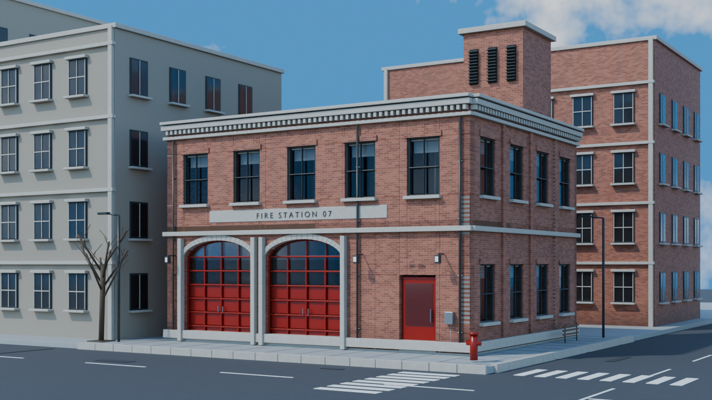
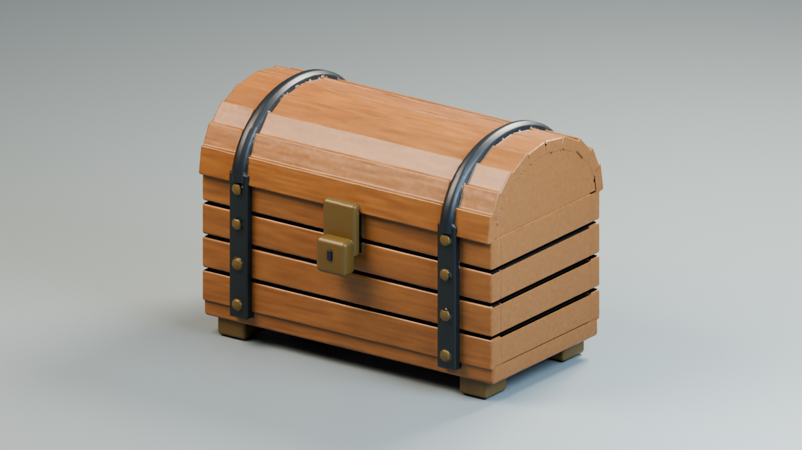
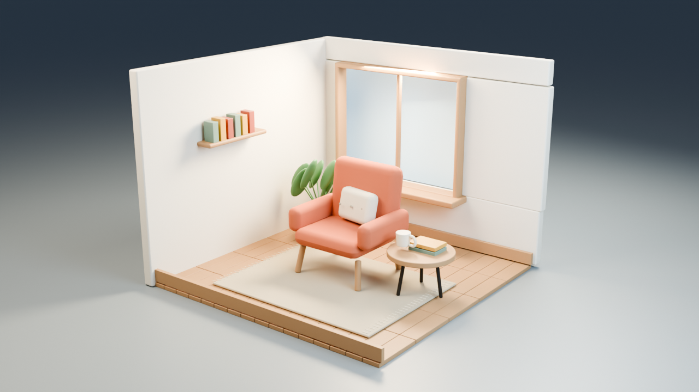
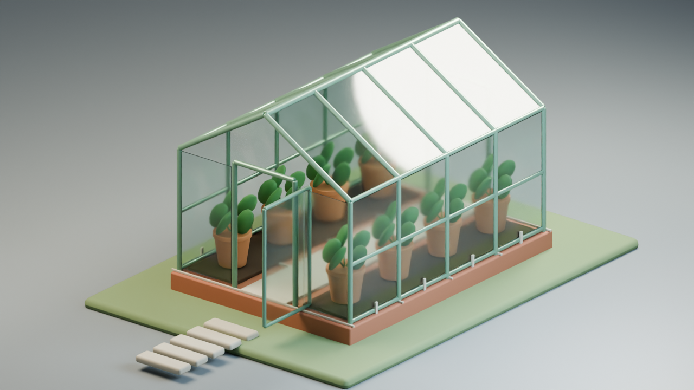

02 · City Corner Firehouse
Complete city-corner architectural visualization.

These are the current selected results. Open an image to inspect it at full size.
Complete city-corner architectural visualization.

Domed walnut chest with dark iron straps, brass hardware, and a flush arched lid end.

Perspective room composition with complete furnishing coverage.

Open pot beds beside a central path, transparent pitched roof, sage frame, and brick plinth.
